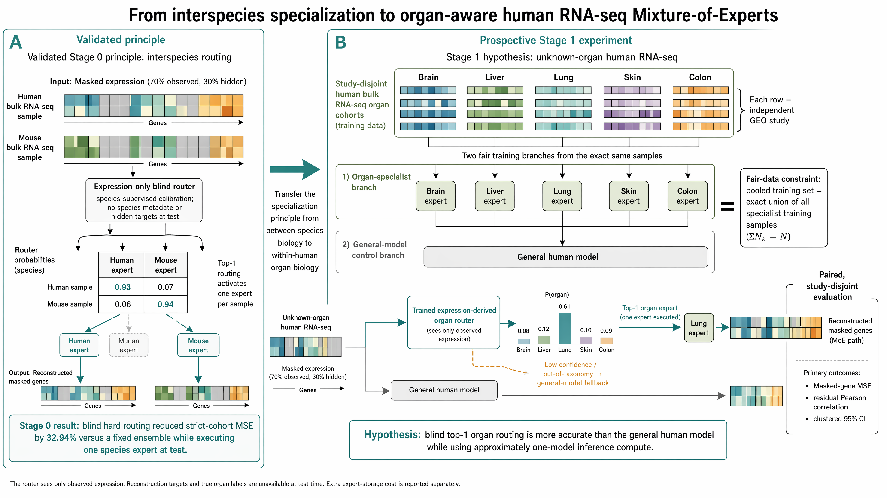

From inherited species models to a biological discovery program
Last semester produced human-, mouse-, and mixed-trained RNA-seq reconstructors. This summer asks whether specialization can expose reproducible biology—not merely improve one score.
Human, mouse, and mixed models learned to reconstruct 30% hidden genes; V1→V3 repaired data/vocabulary issues and scaled training.
Do the models learn complementary biology? Compare one pooled model, a fixed ensemble, and adaptive routing.
Species positive control → organs → label-free discovery, with connected-study-disjoint tests at every step.
The first read said “blend, don't route” — but the test could not support that conclusion
What the first result seemed to say
- A fixed blend helped more than selecting a specialist.
- The reported “oracle” showed almost no routing headroom.
- The tempting conclusion was to stop adaptive routing.
- That would have ended the MoE path before organ experiments.
The evaluator invalidated the apparent null
- Raw TPM entered models trained on
log1p(TPM). - Weights and the gene-mean baseline used reporting data.
- A hard selector was mislabeled as the routing ceiling.
- Large GEO studies dominated sample-weighted averages.
Thought progression: apparent null → evaluator audit → frozen study-aware protocol (103 disjoint connected groups, deterministic masks, out-of-fold fitting) → rerun before abandoning MoE.
Corrected evaluation reveals large routing headroom — and the larger V3 cohort shows more
Strict study-disjoint cohort · relative MSE reduction vs the out-of-fold fixed blend. V3 (20k) holds architecture, objective, and the 15,448-gene vocabulary fixed and adds 4× data.
Strict 20k soft routing: 34.7% lower MSE; absolute gain 0.1649, 95% CI [0.1575, 0.1726]; residual-Pearson gain +0.1198, CI [0.1130, 0.1267]. Hard routing already delivers most of it; among these three frozen models on this cohort, the soft oracle reaches 35.0%.
Caveat: V2/V3 draws and epoch budgets differ, so 5k → 20k is controlled in architecture and objective, not a perfect single-variable ablation.
A species-supervised gate recovers the route from expression alone at test time
The gate is supervised on calibration groups; at strict test it sees neither species nor targets, and the connected groups are disjoint.
Answer: expression alone at test time recovers almost all measured species-routing headroom. The soft result establishes routability, not sparse-inference efficiency.
What Stage 0 now establishes — and what it does not
Species specialization is useful
- Hard routing already gives most of the gain.
- Soft routing adds a smaller refinement.
- A blind expression gate recovers the route.
- Scaling 5k → 20k increases adaptive headroom.
Not yet a complete systems claim
- Three full frozen models store more parameters than one model.
- The pooled V3 model had species-local batches.
- Current results are reconstruction, not downstream spaceflight classification.
- Organ specialization must be tested independently.
Control still in flight: the pooled model is retraining with globally shuffled cross-species batches. Its frozen evaluation will update the Stage 0 systems claim, but it does not waive any Stage 1 gate.
Use the Stage 0 positive control to ask a harder within-human question
Species hidden at test → expression gate → calibrated expert mixture
A maximally separable biological axis shows that the evaluation can detect specialist headroom and blinded routing.
blind-soft vs fixed
Unknown organ → trained organ router → organ expert
Inter-organ biology is distinct enough that a routed specialist will outperform one general human model.
blind top-1 vs general
With the same training data and approximately the same inference compute, does blind organ-specialist routing reconstruct masked genes better than one general model?

A five-organ pipeline pilot, then scale only if it survives controls
- DATA GATEDefinitive cohort: ≥95% audited precision; per organ ≥1,000 clean train rows plus 30/10/15 train/calibration/final-test groups.
- CODE + SMOKEManifest-aware deterministic path: micro-overfit → K=5 mechanical test → brain/skin three-seed feasibility.
- STAGE 2 ENTRYAll five comparisons clear frozen thresholds: true-organ > pooled 5%; organ-fixed > random-fixed 3%; oracle > organ-fixed 3%; blind top-1 > pooled 5% (+80% recovery); blind-soft > organ-fixed 3%. Positive paired MSE CIs; positive top-1 residual-Pearson CI.
Current decision: definitive Stage 1 training is NO-GO; pipeline smoke testing only. The cohort, code, split, and smoke gates must pass first.
“MoE beats one general model” is established; the open question is what the routes reveal
MoE specialization
Compute-matched gains, task interference, and task grouping are known ML patterns.
RNA-seq representation
Masked reconstruction and bulk/single-cell foundation models already learn expression embeddings.
Transcriptomic MoE/discovery
“First MoE” and broad hidden-pattern claims are already occupied.
Do label-free routes predict controlled cross-domain transfer—and do route-derived groups improve learning on untouched studies?
Can label-free routing discover which RNA-seq domains learn well together?
Estimate the relationship separately through controlled training and label-free routing, then test agreement and function on an untouched lockbox.
Measure who helps whom
Compare A1 + A2 with A1 + B1, matching samples, studies, updates, and compute. Evaluate both on unseen A studies.
+ benefit · − interference
Validate, then let the MoE find groups
First require supervised routing over balanced random, stable non-collapsed experts, and matched active compute. Then remove all labels.
which samples share experts?
Do the two maps agree?
On an untouched lockbox, co-routed domains should transfer compatibly. Retrain route-derived groups and compare with organ, random, and pooled groupings at matched compute.
not just a cluster visualization
Novelty test: two separately constructed measurements must agree on the lockbox and improve learning. Recovering organ alone is a positive control—not hidden discovery.
Entry logic: green runs the coupled test; router-failure amber permits transfer only; wrong-axis amber permits only a bounded label-free pilot.